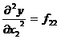

MATHS :: Lecture 13 :: Maxima & Minima of several variables

PHYSICAL AND ECONOMIC OPTIMUM FOR SINGLE INPUT
Let y = f(x) be a response function. Here x stands for the input that is kgs of fertilizer applied per hectare and y the corresponding output that is kgs of yield per hectare.
We know that the maximum is only when and.
This optimum is called physical optimum. We are not considering the profit with respect to the investment, we are interested only in maximizing the profit.
Economic optimum
The optimum which takes into consideration the amount invested and returns is called the economic optimum.

where Px → stands for the per unit price of input that is price of fertilizer per kgs.
Py → stands for the per unit price of output that is price of yield per kgs.
Problem
The response function of paddy is y = 1400 + 14.34x -0.05 x2 where x represents kgs of nitrogen/hectare and y represents yield in kgs/hectare. 1 kg of paddy is Rs. 2 and 1 kg of nitrogen is Rs. 5. Find the physical and economic optimum. Also find the corresponding yield.
Solution
y = 1400 + 14.34x -0.05 x2
= negative value
ie. 
Therefore the given function has a maximum point.
Physical Optimum

i.e 14.34-0.1x = 0
-0.1 x = -14.34
x = kgs/hectare
therefore the physical optimum level of nitrogen is 143.4 kgs/hectare.
Therefore the maximum yield is
Y = 1400 + 14.34(143.4) -0.05(143.4)2
= 2428.178 kgs/ hectare.
Economic optimum

Given
Price of nitrogen per kg = Px = 5
Price of yield per kg = Py = 2
Therefore 14.34-0.1x =
28.68 - 0.2 x = 5
- 0.2 x = 5 - 28.68
x = kgs/hectare
therefore the economic optimum level of nitrogen is 118.4 kgs/hectare.
Therefore the maximum yield is
Y = 1400 + 14.34(118.4) -0.05(118.4)2
= 2396.928 kgs/ hectare.
Maxima and Minima of several variables with constraints and without constraints
Consider the function of several variables
y = f (x1, x2……….xn)
where x1, x2 …………..xn are n independent variables and y is the dependent variable.
Working Rule
Step 1: Find all the first order partial derivatives of y with respect to x1, x2, x3 ……xn..
(ie)

.
.
.
.
Step 2
Find all the second order partial derivatives of y with respect to x1, x2, x3 ….xn and they are given as follows.

and so on
Step: 3
Construct an Hessian matrix which is formed by taking all the second order partial derivatives is given by
H is a symmetric matrix.
Step: 4
Consider the following minors of order 1, 2, 3 ……….

Steps: 5
The necessary condition for finding the maximum or minimum
Equate the first order derivative to zero (i.e) f1 = f2 = ……..fn = 0 and find the value of x1, x2, ……..xn.
Steps: 6
Substitute the values x1, x2 ……..xn in the Hessian matrix. Find the values of
If
Then the function is maximum at x1, x2 ……..xn.
If then the function is minimum at x1, x2……. xn.
Steps: 7
Conditions |
Maximum |
Minimum |
First |
f1 = f2 = f3 = fn = 0 |
f1 = 0, f2 = 0 ……. fn = 0 |
Second |
|
|
Note :
If the second order conditions are not satisfied then they are called saddle point.
Problem
Find the maxima (or) minima if any of the following function.
Solution
Step 1: The first order partial derivatives are
Step 2: The second order partial derivatives are
Step 3: The Hessian matrix is
4. Equate f1, f2 = 0
f1 Þ 4x12 - 4 = 0
x12 = 1
x1 = 1
x1 = 1, x1 = -1
f2 Þ 2 x 2 + 8=0
2 x2 = - 8
x2 = - 4
The stationary points are (1,- 4) & (-1, - 4)
At the point (1, - 4) the Hessian matrix will be
H = 
| H1| = | 8| > 0
| H2| = = 16 > 0
Since the determinant H1 and H2 are positive the function is minimum at (1,- 4).
The minimum value at x1 = 1 & x2 = - 4 is obtained by substituting the values
in (1)
y =  (1) 3 + (- 4)2 – 4 (1) + 8 (- 4)
(1) 3 + (- 4)2 – 4 (1) + 8 (- 4)
y =  + 16 – 4 - 32
+ 16 – 4 - 32
y =  - 20
- 20
y = = 
The minimum value is 
At the point (-1, - 4)
H = 
| H1 | = | - 8 | = - 8 < 0
| H 2| = - 16 < 0
Both the conditions are not satisfied. Hence the point (-1, - 4) gives a saddle point.
Economic Optimum
For finding the Economic Optimum we equate the first order derivative
f1 . f 2 . . . . fn to the inverse ratio of the unit prices.
(ie) f1 =
f2 = …………..
fn =
where Px1 , Px2,… Pxn and Py are the unit prices of x1, x2 ….. xn and y. These are the first order condition.
The economic optimum & the physical optimum differ only in the first order conditions. The other procedures are the same.
Maxima & Minima of several variables under certain condition with constraints.
Consider the response function
y = f (x1, x2 ….xn ) subject to the constraint f (x1, x2…..xn ) =0
The objective function is Z= f(x1, x2, …xn) + l[f(x1, x2, …xn)]
where l is called the Lagrange’s multiplies.
The partial derivatives are
for i = 1, 2 ….. n.
i, j = 1., 2 …. n.
i = 1, 2 ….. n.
Now form the Bordered Hessian Matrix as follows.
 Bordered Hessian
Bordered Hessian 

[Since this extra row & column is on the border of the matrix .So we call it as Bordered Hessian matrix and it is denoted by ]
Here minor as are


and so on.
Conditions |
Maxima |
Minima |
First Order |
f1=f2= f3 = ….fn =0 |
f1= f2 = f3 …… fn = 0 |
Second Order |
Problem
Consider a consumer with a simple utility function U = f(x, y) = 4xy – y2 . If this consumer can at most spend only Rs. 6/- on two goods x and y and if the current prices are Rs. 2/- per unit of x and Rs.1/- per unit of y. Maximize the function.
| Download this lecture as PDF here |